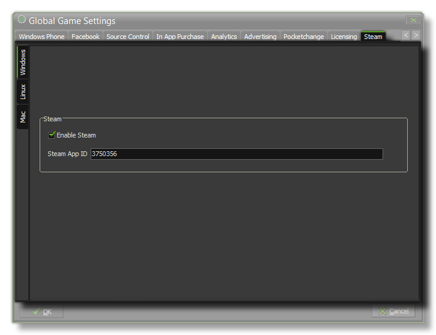

If your game has been accepted onto the Steam platform for sale, you should have installed and checked the Steamworks SDK through the
Steam Preferences tab. Along with the SDK, you should have been given a Steam App ID which should then be inserted here, and the Enable Steam checkbox ticked for each
of the possible Steam target platforms (Windows, Linux or MacOSX). This will now enable the use of the Steam API Functions in your game.
NOTE: This functionality is limited to the Professional Version of GameMaker:Studio.